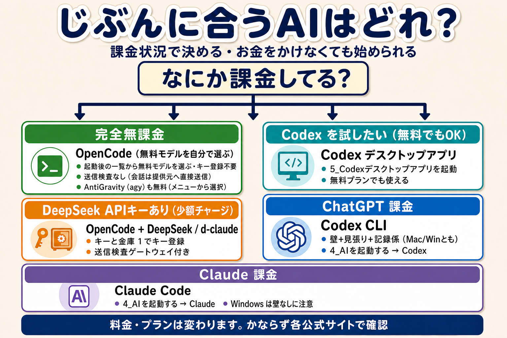

AI エージェントはたくさんありますが、選び方はシンプルです。「いま何に課金しているか」で決めてください。お金をかけなくても始められます。

あてはまるものが複数あるときは、上にあるほうが「お金がかからない」順です。どれを選んでも、起動はスタートフォルダのボタンからです。
OpenCode には無料で使えるモデルがいくつも用意されています。起動後のモデル一覧から自分で選べば、お金をかけずにそのまま使えます（キーの登録は不要です）。
守られ方：危険なコマンドを止める仕組み・秘密ファイルの読み取り禁止・見張り＋記録係は、DeepSeek 版とまったく同じものが効きます。ただし無料モデルの会話は送信検査ゲートウェイ（キーを伏せる仕組み）を通らず、選んだモデルの提供元へ直接送信されます。
AntiGravity は Google の無料 CLI です。こちらもお金をかけずに AI エージェントを体験できます。
守られ方：AntiGravity 自身の隔離機能（--sandbox）を付けて起動し、記録係が残ります（この隔離は独立に検証したものではないので「壁あり」とは数えていません）。利用条件は AntiGravity 公式ページで確認してください。
Codex のデスクトップアプリは、ChatGPT の無料プランでも使えます。黒い画面が苦手な人にもおすすめです。
利用できる範囲はプランによって変わります。Codex 公式ページで確認してください。
DeepSeek のキーを持っている人は、OpenCode + DeepSeek（標準）か、Claude Code の操作感で使える d-claude を選べます。どちらも送信前にキーや秘密情報を検査する送信検査ゲートウェイつきです。
DeepSeek には無料利用枠もあります（条件は変わります）。キーの作り方・チャージは DeepSeek 公式と docs の「20_卒業後ガイド」へ。
ChatGPT の有料プランに入っているなら、Codex CLI が使えます。Mac でも Windows でも「壁＋見張り＋記録係」の全部が効く、このパッケージでいちばん守りの厚い組み合わせです。
CLI がどのプランで使えるかは変わることがあります。ChatGPT のプラン一覧（公式）で確認してください。
Claude の有料プランに入っているなら、Claude Code が使えます（無料プランでは使えません）。
注意：Claude Code の「壁」は Mac では効きますが、Windows では使えません（Claude Code 自体が未対応のため）。Windows では見張り＋記録係が守ります。プランは Claude のプラン一覧（公式）で確認してください。
| あなたの状況 | 使う AI | 起動のしかた | 守られ方 |
|---|---|---|---|
| 完全無課金 | OpenCode（無料モデルを自分で選ぶ） | 「4_AIを起動する」→ 1 番 | 見張り＋記録係＋deny 床（送信検査は無し＝会話は選んだモデルの提供元へ直接送信） |
| 完全無課金（無料 CLI も試したい） | AntiGravity（agy） | 「4_AIを起動する」→ AntiGravity | AntiGravity 自身の隔離（--sandbox）＋記録係 |
| 無課金で Codex を試したい | Codex デスクトップアプリ | 「5_Codexデスクトップアプリを起動」 | 壁（アプリ自身）＋見張り＋記録係（キーと金庫の 12 を押した場合） |
| DeepSeek キーあり（少額チャージ） | OpenCode + DeepSeek ／ d-claude | キーと金庫の 1 で登録 → 「4_AIを起動する」 | 見張り＋記録係＋送信検査 |
| ChatGPT 課金 | Codex CLI | 「4_AIを起動する」→ Codex | 壁＋見張り＋記録係（Mac／Windows とも） |
| Claude 課金 | Claude Code | 「4_AIを起動する」→ Claude | Mac は壁＋見張り＋記録係／Windows は見張り＋記録係 |
「壁・見張り・記録係」の意味は、スタートの 8_使い方ガイドを開く（使い方ガイド）にあります。もっとくわしい比較は docs の「00_はじめに」と「20_卒業後ガイド」へ。